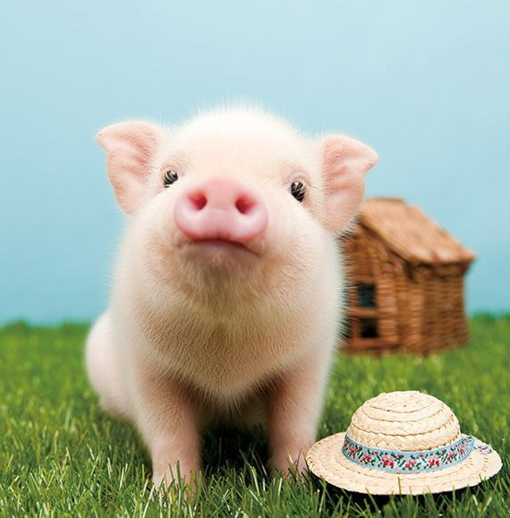
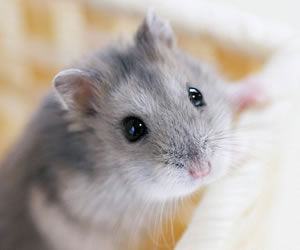
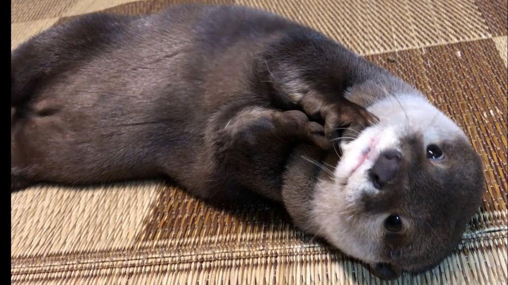

いきなりですが自分は動物大好きです。
子供の頃から猫に囲まれた生活をしてきたので、ペットはかわいいだけではなく、飼うのにはそれなりの苦労と覚悟が必要なことはわかっています。
特に別れの瞬間は立ち直るまで時間がかかりますよね。
生き物なのでもちろん別れの悲しみはありますが、やはり飼っている間は凄く可愛くて愛おしくてたまりません。
一緒に過ごした時間は、人生の中の思い出となり財産になります。
そんな動物が大好きで、今すぐにでも飼いたいのに、住んでるところがペット不可の物件で生殺し状態になっている男が本当に可愛いペットランキングを紹介します。
今回は自分の勉強も兼ねて、ランキングにいる動物の飼育の仕方をペットショップ＆実際飼っている人に聞き込んできたので、それも簡単に記載します。(あとネットで調べた部分もある)
是非あなたがかわいいと思ったペットの基礎知識をここでつけて、各自本当に飼いたいと思った動物のことをより詳しく調べてみてください。
あくまでも自分はペットを飼うための入り口付近の知識しか記載してないので、後は各動物の専門ページに任せます。
では、ランキングをどうぞ。
目次[表示]
悶絶注意！本当に可愛いペットランキング
10位：フェネック
【基本データ】
英語：Vulpes zerda
価格：100万円前後(ペットショップの場合)/60～80万円前後(ブリーダーの場合)
平均寿命：10年
大きさ：36～41cm
餌：ドッグフード、キャットフード
おやつ：野菜や果物
食べさせてはいけないもの：ネギ、ニラ、にんにく、チョコレートなど
飼育の適温：26～30℃
最近動物園でも見られるフェネックは、自宅でも買うことができます。
価格は他のペットに比べると段違いに高いですが、フワフワの毛に長い耳が非常にかわいいですね。
飼育環境に最低限必要なものは
・ケージ
・食器
・飲み水用の器
・トイレ
ケージは防音のものが好ましいです。フェネックはペットとしての需要が高まってきているとはいえ、まだ飼っている人があまりおらず、獣医としても病気の症状がわからない場合が多く適切な処置がとれないという現状があります。ですので、万が一体長を崩した時に対処できるように、診察を受け入れてくれる病院があるということが重要になってきます。
フェネックは見た目はかわいいですが、飼育にはかなりの覚悟が必要です。普段はストレスが溜まらないようにケージの外に出しておくのですが、運動量がとんでもなく多いです。走り回わったり、穴を掘ったり、所構わずジャンプしたり好奇心旺盛なのでとにかく動き回ります。ですが、臆病なので散歩には向かない上に、警戒心が強炒め懐くまでにかなり時間を要します。
トイレは基本的には覚えず、排泄物は刺激臭がかなり強いので、後始末と臭いの処理にも気を付ける必要があります。一応トイレの場所は作っておき、後は覚えるまで根気との勝負です。
長生きさせてあげるために、フィラリアの予防接種や犬用のワクチンを処方してもらい定期的な健康診断を受けるようにしましょう。フェネックは高額なうえに夜行性で活発なので、騒音、悪臭、飼育費用に耐えることができないと思ったら飼おうとは思わないでください。
Topに戻る9位：ミニブタ

【基本データ】
英語：miniature pig
価格：5～15万円
平均寿命：10～15年
大きさ：50～100cm
餌：専用フード、野菜、穀物
食べさせてはいけないもの：チョコレート、梅干し、トマト、ジャガイモの芽、どんぐり、ねぎ類、草花の種子
飼育の適温：18～24℃
ミニブタは最近人気がでてきたペットです。大人になってからの大きさは育て方や個体にもよりますが、平均的には50kgで大きなものだと100kgにもなります。もっと小さいブタが飼いたいという方は、海外からの取り寄せになると思いますがマイクロブタという種類もいるので、そちらをおすすめします。価格としては3～10万円で平均寿命はミニブタと同じぐらいです。
飼育環境に最低限必要なものは
・ケージ
・食器
・飲み水用の器
・ペット用トイレシート
・散歩用ハーネス(イヌ用でOK)
ミニブタはきれい好きなため、トイレと寝床は離れた場所に確保してください。頭がいいのでトイレの場所は覚えることができます。トイレ以外で排泄した場合はすぐに片づけ、消臭スプレーで臭いを消してください。そうすることで、トイレの場所を認識し覚させることができます。排泄物の量が多いので、こまめにトイレの掃除をしてください。体臭がほとんどないので排泄物の手入れさえしていれば飼育する上で臭いの問題は気にならなくなります。
ミニブタは足を入れながら食事をすることがあるので、食器は大きめで底が浅いものがおすすめです。傷つきにくく洗いやすいものがいいのでステンレス製がいいでしょう。
飼育環境で大切なのが、鼻ほりという鼻先で地面を掘る行為をさせてあげることです。この行為はストレス発散にもなるので、ケージ内に王砂利などを敷いてスペースを確保しましょう。また、鼻ほり以外にも運動不足解消のために、20分～1時間程の散歩の時間を設けてください。季節による散歩の注意事項としては、夏場は涼しい時間を選び冬場はセーターなどで防寒対策をしてください。
長生きさせてあげるためには、ストレス対策をしっかりして、ミニブタは何でも食べるので高カロリーなものを与え過ぎないように食事には気を使ってください。病気になった際には診療可能な動物病院が限られるので飼う前に専門知識を持った人を見つけておいてください。
Topに戻る8位：ハムスター

【基本データ】
英語：hamster
価格：1,000～3000円
平均寿命：2～3年
大きさ：2～3cm
餌：ハムスター用のペレット
食べさせてはいけないもの：銀杏、しし唐、しょうが、たまねぎ、とうがらし、ニラ、にんにく、ネギ、ワラビなど
飼育の適温：20～26℃
ハムスターは価格・飼いやすさ・かわいさに安定のある動物です。体も小さくケージの環境さえ整えれば飼うことが可能なので、ペット不可の物件でも大家さんによっては飼育の許可をだしてくれる場合もあります。
飼育環境に最低限必要なものは
・ケージ
・回し車
・給水器
・隠れ家
・床材(防臭が好ましい)
・トイレ
・餌箱
ケージの置き場所は、直射日光が当たる窓際やエアコンの風が直接あたる場所は避けましょう。寒暖差が激しく病気になってしまいます。置き場所は室温が安定しており、ケージ内から外の様子が気にならない部屋の隅が好ましいです。
飼育のポイントとして毎日することがあります。
・餌やり
・給水器の水交換
・トイレや床材の掃除
ハムスターはきれい好きなので、ケージ内は清潔に保つのを心掛けてください。あと手入れする時間に注意！夜行性のハムスターが活動している時にしてください。寝ている日中にごそごそされると、ストレスになってしまいます。
体が小さい分平均寿命が約2～3年と短めですが、大事に育てればそれ以上に長生させることは可能です。長生きさせてあげるためには、毎日の手入れが大事になってくるので、こまめな気配りが苦手な人は飼うのをやめましょう。
7位：カワウソ

【基本データ】
英語：otter
価格：60～70万円
平均寿命：10～15年
大きさ：40～65ｃｍ
餌：フェレットフード、キャットフード、魚類、甲殻類、貝類
飼育の適温：20～25℃
国内にはカワウソカフェなるものが出現し、八景島シーパラダイスでは握手ができるコーナーを作るなど世間的にも人気急上昇中のカワウソ。
YouTubeで大人気のカワウソ動画を見て、飼いたいと思った人は多いのではないでしょうか？
鳴き声やしぐさがかわいいカワウソですが、価格は他のペットに比べて高めで、飼育にはいくつかハードルがあります。
飼育環境に最低限必要なものは
・ケージ
・食器
・飲み水用の器
・水浴び用の容器
・トイレ
・おもちゃ
カワウソは綺麗好きなので、ケージの中やトイレが汚れているとストレスになるので、常に清潔な状態にしておくことを心掛けてください。また、毎日水浴びをさせないとこれもストレスになります。運動不足解消のためのおもちゃと、ストレス解消のための水浴びをできる環境を整えてください。
カワウソは頭がよくトイレを覚えます。しかし、排泄量が多いため撒き散らしてしまう場合がありますので、カワウソに合ったトイレを用意してあげてください。もし自分で決めることができなかった場合、購入先のペットショップに相談しましょう。
長生きさせてあげるためには、ストレス対策が必須です。ストレスが溜まると食欲不振に陥ってしまいます。また、食事の際に生の魚や甲殻類を与える場合は寄生虫対策のため、一度冷凍したものを食べさせてください。カワウソを診察してくれる動物病院は非常に少ないため、飼う前に診察可能な病院があるか確認しましょう。
こまめな掃除が苦手な人や、水浴びができる環境を整えられない場合は飼わないでください。
水道代と冬場の室温管理に費用がかなりかかるので、その点も飼う前に覚悟が必要です。
Topに戻る6位：フクロモモンガ
【基本データ】
英語：Flying squirrel
価格：15,000円～30万円
平均寿命：7～8年
大きさ：16～21cm
餌：専用フード、野菜、果物、ミルワーム、煮干し、チーズ、ナッツ類などをバランスよく
食べさせてはいけないもの：スイセン、チューリップ、アジサイ、アサガオ、スズラン、ニラ、タマネギ、ジャガイモの芽など
飼育の適温：20～28℃
小さな体にくりくりの目を持ってるところがかわいいモモンガ。体が小さく飼いやすいので人気が出てきており、フクロモモンガカフェなるものもあります。ムササビと混同されがちですが、ネットで検索して画像で見ると結構顔立ちが違います。値段に関しては種類によって大きく分かれるので、自分の好みの種類によっては出費が大きくなりますね。
飼育環境に最低限必要なものは
・ケージ
・巣箱
・止まり木
・水入れ
・食器
・給水器
・トイレ
・床材
モモンガは滑空するので、高さや広さのあるケージが必要となります。巣箱は清潔感を保てるものを選び、ケージ内の高い所に取り付けてください。トイレは設置してもいいですが、基本的には覚えないので使ってもらえないかもしれません。病気を防ぐために、掃除の頻度は、床材は最低でも2～3日、ケージ全体は月に1回は必ずするようにしてください。
オスのモモンガは、メスの気を引く為の臭腺があるので臭いが強いです。少しでも臭いを抑えたいのであれば、飼うのはメスがいいと思います。
フクロモモンガは警戒心が強いので、懐くまでにかなりの時間を要します。また臆病で繊細なので、突然の大きな物音にびっくりしてショック死してしまう場合もあります。飼育する環境はできるだけ静かな環境にしてあげてください。
長生きさせてあげるために、栄養不足やストレスには気を付けましょう。特にストレスは免疫力の低下に繋がり、元々持っている寄生虫が異常に増殖してしまったり自傷行為を起こしたりしてしまいます。動物病院では診察してくれる病院が少ないので飼い主がしっかり気を付けなければなりませんので、こまめな世話ができる人だけ飼いましょう。
Topに戻る5位：ウサギ
【基本データ】
英語：Rabbit
価格：5,000～10,000円(雑種)/30,000～100,000円(純血種)
平均寿命：5～10年
大きさ：20～50cm
餌：専用ペレット、牧草
食べさせてはいけない野菜：ジャガイモの芽と皮、ネギ、たまねぎ、生の豆、だいおう、ニラ、ニンニク
飼育の適温：16～22℃
うさぎはペットとして飼っている人は少なくありません。学校の飼育小屋で飼っていたという人もたくさんいると思います。値段もそこまで高いものではないので購入しやすいですが、飼育にあたっては気をつけなければいけないことがあるので結構気遣いが必要になります。
飼育環境に最低限必要なものは
・ケージ
・食器
・給水器
・トイレ
・ペットシーツ
・かじり木
・爪切り
・ブラシ
・隠れ家
・牧草入れ
ウサギの室内飼いで一番気を付けなければならないことが、ありとあらゆるものをかじるという本能です。これはストレス発散に繋がる行為ですが、電気コードや家の柱などを噛んでは大変なのでかじり木を用意しましょう。あと、基本的に口に入れてたものは何でも飲んでしまいます。ゴムやたばこなど、ウサギが誤飲したら危ないものは床に落としたままにしないでください。
ウサギは自分で毛づくろいをするのですが、その時に飲んだ毛がお腹に溜まってしまう場合があります。毛玉症と呼ぶ病態なのですが、ペレットだけ食べさせていると毛玉症が起きやすいです。毛玉症を防ぐために、常に牧草入れに牧草を入れておいてください。ちなみに牧草の種類は2種類あり
| アルファルファ(マメ科代表) | チモシー(イネ科代表) |
| 成長期のウサギ | 高齢のウサギ |
上記の様に使い分けが好ましいです。(主に栄養面が理由)
基本的に牧草はいくら食べても大丈夫です。野菜、野草、果物、ドライフード、サプリメントなどは副食として食べさせて、量は少量にしましょう。主食のペレットの目安は体重の３％を１日２回です。
ウサギは臭いを頼りにトイレを覚えることができますが、その場所は一か所とは限りません。しかし、嬉しさや縄ばりをアピールしたい時などにも興奮してトイレ以外でも糞やおしっこをしてしまう場合があります。糞はコロコロして臭いがないのでいいのですが、尿の臭いが強いので見つけたらすぐさま掃除してください。
ケージ内の掃除の頻度は
| 毎日一回 | 週一回 | 月一回 |
| 食器 | すのこ | ケージ |
| 給水器 | 遊具 | |
| トイレ・砂 | 隠れ家 | |
| ペットシーツ | 牧草入れ |
を目安にお願いします。
長生きさせてあげるために、気を付けなければならないのがストレスです。まず、うさぎを飼い始めて家に来てから1週間はケージの中に入れて、周囲の環境に慣れさせてください。そこからケージから出し少しずつ家の環境に慣れさせます。部屋の掃除が苦手で、床に色々なものが常に落ちている人や部屋の中のものが齧られるのが嫌な人は飼うのをおすすめしません。
4位：ハリネズミ

【基本データ】
英語：hedgehog
価格：15,000～40,000円
平均寿命：5～10年
大きさ：14～20cm
餌：専用フード、ドックフード、キャットフード、フェレットフード
食べさせてはいけないもの：タマネギ、チョコ、牛乳、生卵、アボカド、ぶどう類、レーズン、ナッツ類など
飼育の適温：24～29℃
ハリネズミも人気が急上昇中の動物です。こちらもハリネズミカフェが出てきたり、YouTubeで動画がupされたりと、可愛さが世間に広がっています。値段はそこまで高価ではないですが、わがままな一面もあるので初心者には少し飼育が大変だと思います。
飼育環境に最低限必要なものは
・ケージ
・床材
・寝床
・回し車
・給水器
・餌箱
飼育で気にしなければいけないのが床材です。ハリネズミは針葉樹にアレルギーがあるので、床材は広葉樹のものにしてください。また、温度管理も重要で熱すぎたり寒すぎたりすると最悪の場合死んでしまう場合があります。非常にデリケートな動物なので常に気にかけてください。
ハリネズミは臆病な一面があるので簡単には懐きません。懐かせるために必要なことは、飼い主の匂いを覚えさせることです。同じ匂いに慣れさせる必要があるので、香水や石鹸などの香りがする時は触らない方がいいです。餌を手で揚げたり適度なスキンシップで危害が無いことをアピールして、安心できる存在であることを認識させてください。
においに敏感なハリネズミは、自分の匂いがなくなると不安を覚えストレスを感じてしまいます。ですので、各掃除の頻度の目安は、ケージの掃除や飼育グッズの掃除、床材の取り換えは1週間に1度ぐらいです。掃除の時に注意することが、床材の交換は自身のにおいがついたものを少し残しておくことです。
ハリネズミの飼育で大変なことは、餌に飽きると食べなくなる場合があることです。また、少量を複数回に分けて与えなければならないので餌の管理に気を配る必要があります。
長生きさせてあげるためには、常にハリネズミの様子に気を配ることと、温度と餌の管理には特に注意することです。掃除は1週間に1回程度で済みますが、毎日様子を見ることができない人や餌を考えて与えるのが面倒になりそうだったら飼わないでください。ちなみに病気になった場合診察や治療をしてくれる動物病院は少ないです。
Topに戻る3位：イヌ
【基本データ】
英語：dog
価格：購入時の年齢や種類によって異なる
平均寿命：10～15年
大きさ：犬種によって異なる
餌：専用フード
食べさせてはいけないもの：タマネギ、ネギ、ニラ、らっきょう、にんにく、チョコレート、ココア、ふどう、レーズン、アボカドなど
飼育の適温：23～26℃
昔から根強い人気を誇るペット。様々な犬種がおり、人によって大きく好みが分かれるので各自の好みにあったイヌを選べるところがいいです。
飼育環境に最低限必要なものは
・ケージ
・トイレ
・食器
・給水用の器もしくは給水器
・リード
イヌの飼育時に一番大切なのはしつけです。吠え癖や噛み癖が一度ついてしまうと、専門のトレーナに見てもらわない限り治すのが大変になってしまいます。基本的に頭がいいのでトイレは覚えます。逆にいえばしつけさえしっかりしておけば、飼育に困ることはないと思います。
飼育上気を付けなければならない点が、病気を予防するための予防接種が必要となってくることです。ワクチンの種類は色々あるので、大事に育てるために獣医の話しをしっかり聞いて適切な対処を必ずしてもらってください。
長生きさせてあげるためには、イヌはストレス解消や運動不足を避けるために毎日の散歩が必須になってきます。
また、健康診断やワクチンの接種に高額な費用がかかるので、散歩が面倒だと思う人やお金に余裕がない人は飼わないようにしてください。
2位：フェレット
【基本データ】
英語：ferret
価格：20,000～50,000円
平均寿命：6～8年
大きさ：40～60cm
餌：専用フード
食べさせてはいけないもの：たまねぎ、らっきょ、にんにく、ネギ、ニラ、チョコレート、ココア、ブドウ類、レーズン、パン類、生の豚肉、生卵の白身、魚の内臓果物の種や豆、じゃがいも、ナッツ類、乳製品、野菜や果物、イカ、たこなど
飼育の適温：20℃～25℃
近年飼い始めてる人が増加しているフェレット。購入先で一番有名なフェレットワールドでは、本当に色々なフェレットが販売しており。ホームページでは飼い方の知識を身に着けることができます。フェレットを飼う前は公式ホームページで知識をつけて、そこから飼育するか考えてください。
飼育環境に最低限必要なものは
・ケージ
・トイレ
・食器
・給水器
・トイレ
・トイレ砂
フェレットは基本的に動き回ることが大好きなので、ケージの外での飼育になります。あまりにも活発なため家の中が荒らされることもしばしばあり、懐くまで時間がかかるので飼い始めの頃は苦労すると思います。トイレや噛み癖はしつけ次第で覚えるので、しっかり覚えさせてください。
毎日のお手入れとして、餌や飲み水の交換やケージの掃除などは当然のことですが、定期的に必要なお手入れがあります。それは、爪切り、耳掃除、歯磨きです。目安頻度としては2週間に1回ぐらいが好ましいでしょう。
他のペットと違って特殊なものに注意しなければならないことがあります。それは人間が感染したインフルエンザがうつってしまうことです。また、リードをつけて外を散歩したい場合は、インジステンパーウィルスの混合ワクチンと、フィラリアの予防接種を行ってください。
フェレットは臭いとよく噂にありますが、日本国内で販売されているフェレットは臭腺を取り除かれている場合がほとんどなので、そこまで気になる獣臭はしません。
長生きさせてあげるためには、定期的な健康診断を受け、ストレス発散のために一緒に遊んであげてください。また、餌は複数回に分けて食べるので、食器の中は常に餌が入っている状態が好ましいです。部屋が荒らされることに耐えきれない人や、定期的なお手入れがめんどくさいと感じる人は飼わないでください。
1位：ネコ
【基本データ】
英語：cat
価格：購入時の年齢や種類によって異なる
平均寿命：10～15年
大きさ：種類よって異なる
餌：専用フード
食べさせてはいけないもの：ネギ類、イカ、タコ、アワビ、青身の魚、生卵の白身、練りもの、レバー、乳製品、魚や鳥の骨、生の豚肉、チョコレート、ココア、コーヒー、お茶、お菓子類、ブドウ類、レーズン、香辛料など
飼育の適温：21～28℃
イヌと並んで長年のペット代表の動物。世間ではねこあつめや猫カフェなど、ネコに関するものが大流行になった時もあります。周りにいる猫にとって優しい人には懐きやすく、かわいい見た目でスリスリ甘えてくる姿や時折見せるあざとい感じにメロメロになってしまう人が多いと思います。
飼育環境に最低限必要なものは
・食器
・飲み水用の容器
・トイレ
・トイレ砂
・爪とぎ用グッズ
懐いてくれさえすれば一番手間がかからないペットです。トイレも爪とぎの場所も覚えてくれるので、しつけさえしっかりすれば飼うのは簡単です。
何にでも懐きやすいので、他の動物と一緒に飼うこともできます。ただ可愛いからといって甘やかし過ぎは禁物です。人間の食べ物を喜んで食べるのでついつい与えたくなりますが、猫の身体にとっては大きな負担になるのでそこは心を鬼にしてください。
発情期は非常にうるさいので、耐えられないと思ったら去勢することをおすすめします。
長生きさせてあげるために、人間の食べ物を喜ぶからと言って与えないでください。糖分や塩分がネコにとって大きな負担となります。事故に合わせないためにもなるべく室内飼いにして、ストレス発散のために一緒に遊んであげましょう。飼うのは簡単ですが絶対に大事に育てることができる人だけ飼ってください。
Topに戻る
まとめ
ペットには様々な種類がいて、それぞれ飼育の仕方が違います。ペットが欲しいと今考えている人は本当にしっかり育てることができるか今一度考えて、自分は絶対に大丈夫だと思う人だけ飼ってください。可愛いという理由だけではペットの嫌な部分が見えておらず後悔してしまいます。
飼い主には一つの命を預かる大きな責任があります。
その命を軽々しく思わないでください。
ペット側は飼い主を選ぶことができません。
ですのでもう一度言います。
あなたは一つの命を大切にできますか？